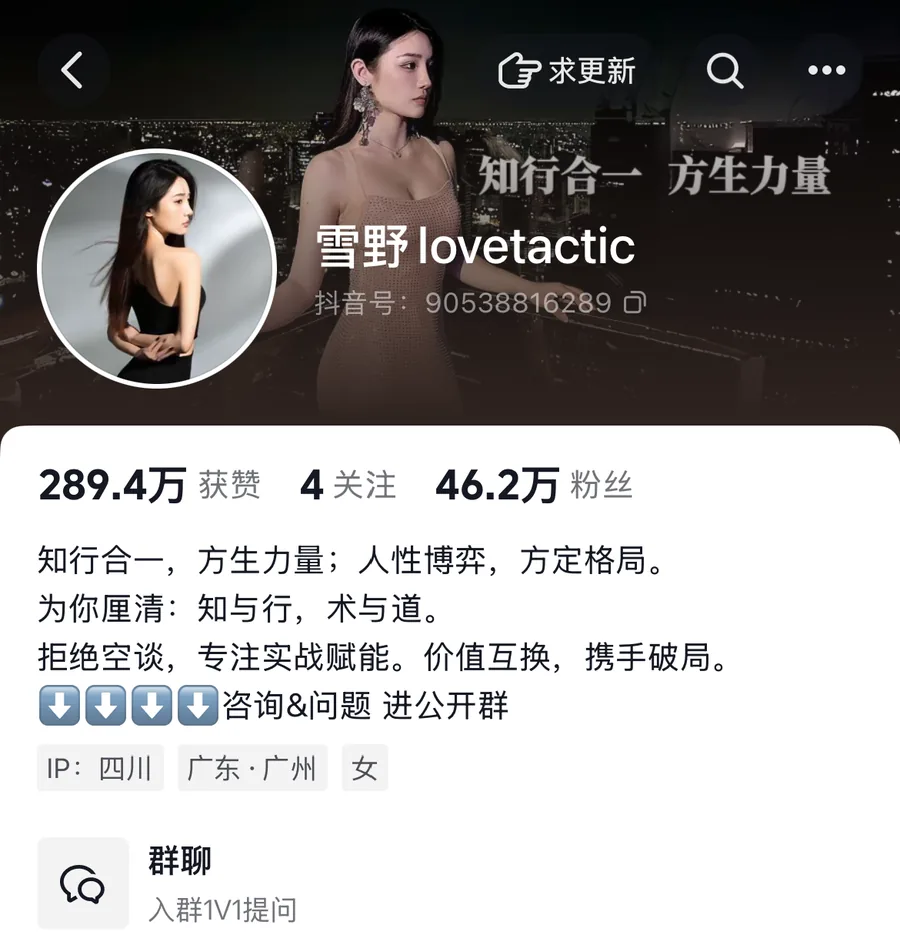
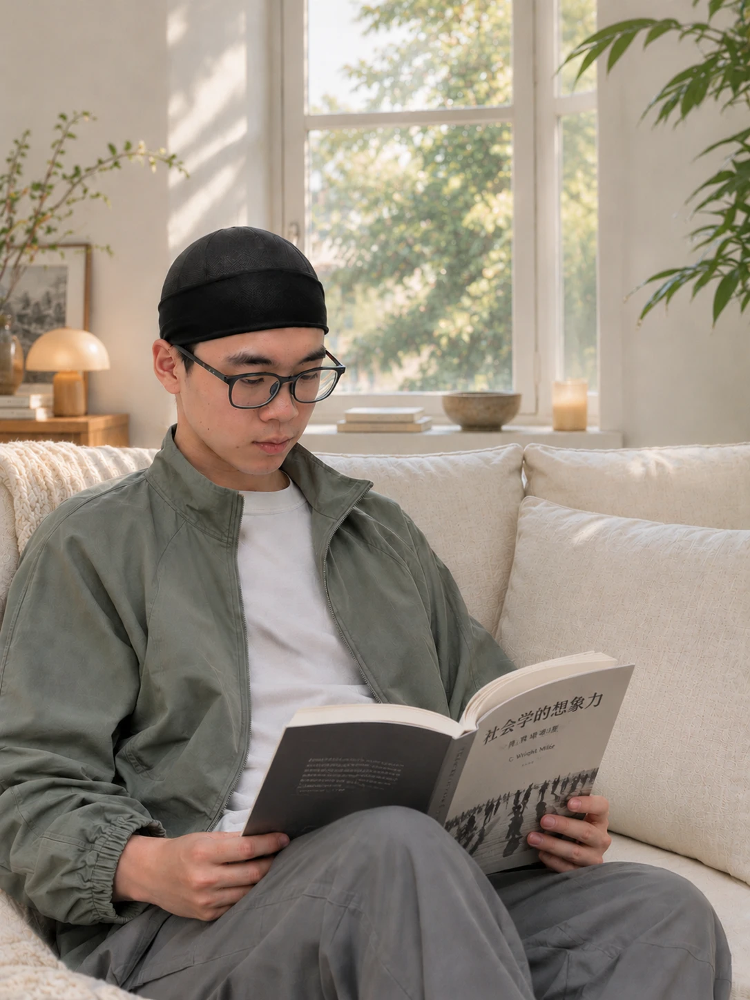
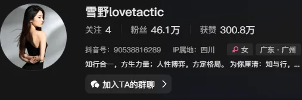
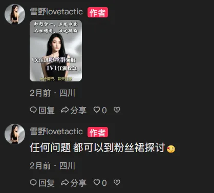
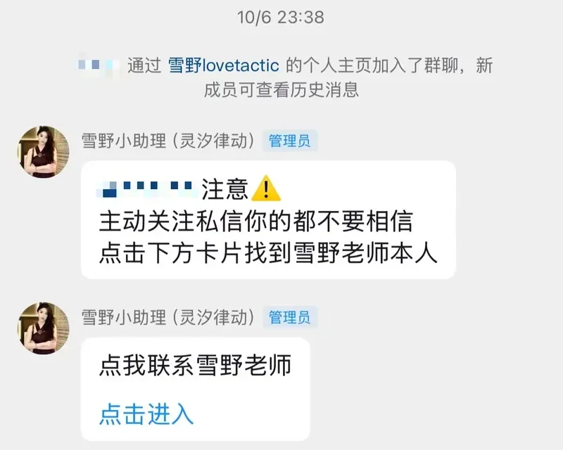
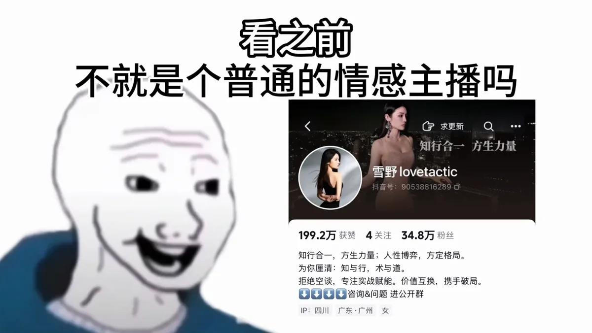
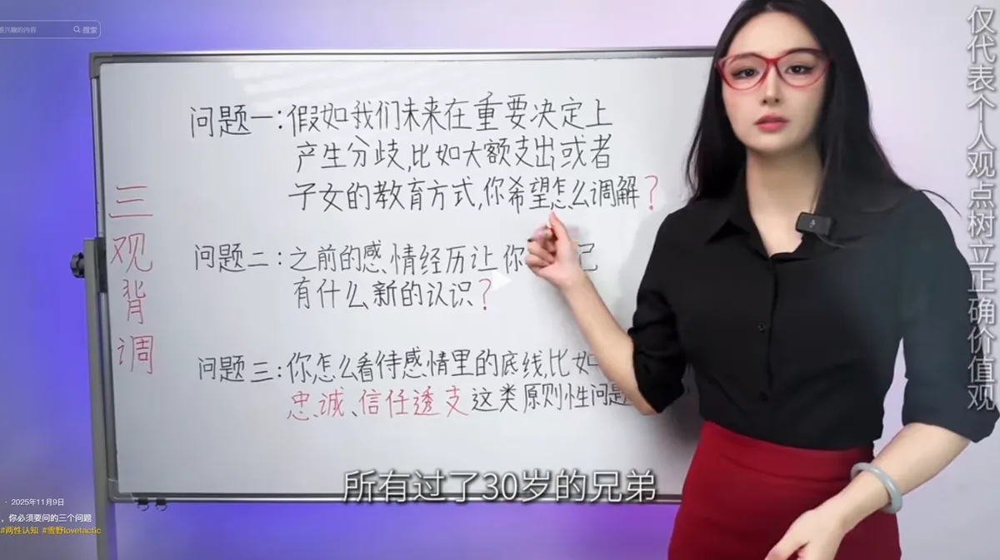
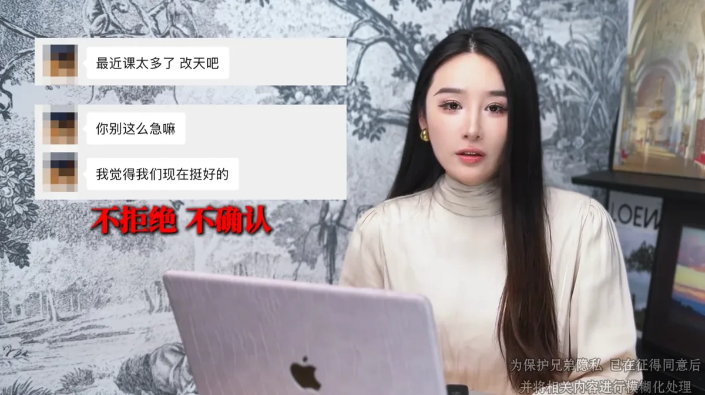

获客型 IP 编导 / 操盘手
周靖达内容的终点，是成交
主导情感 IP「雪野」的定位、选题与文案，一年从 1 万粉做到 40 万粉；也全链路做过大健康 IP。
40万+雪野 抖音粉丝
45.6万单条最高点赞
30万+雪野 单月变现
10万+控糖张主任 粉丝
主导情感 IP「雪野」的定位、选题与文案，一年从 1 万粉做到 40 万粉；也全链路做过大健康 IP。

情感 IP 主导账号定位、选题体系与文案生产；大健康 IP 全链路负责短视频制作，从选题、文案到拍摄剪辑。

新媒体运营 · 短视频全流程制作
2千→10万+8 个月
从公域引到私域：抖音靠粉丝群承接，再由群内转一对一。
以获客为前提做选题，约七成能直接导向咨询产品。
简介写明“咨询&问题 进公开群”，主页挂群聊入口。

作者在评论区回复，引导进粉丝群“领取 1V1 江湖救急”。

新人入群后，管理员发“点我联系雪野老师”卡片，转到一对一。

一对一咨询和陪跑。
群内用户昵称已打码。
三类作品，三种做法：观点合集、白板讲解、学员案例。

45.6万 赞 · 11.9万 收藏 · 19.7万 转发
借用 B 站爆款开头“看之前，不就是个xxx吗”；正文从 30 多条旧作品里挑出金句，围绕“别靠付出换爱，要靠高位”一条线重新编排。

时长 6分55秒 · 白板讲三个问题
把三个问题提前写在白板上，观众一眼就知道这条要讲什么、讲得有多深，用画面制造信息预期。

1.9万 赞 · 7,401 收藏 · 3,030 转发
用学员真实聊天记录复盘（已征得同意并打码）。观众看到的是一次咨询怎么解决问题，内容本身就在展示服务。
我不拿 AI 直接写稿，而是用 Claude Code 和 Codex 搭了一套内容生产体系：知识库、skill 库、生产流程。下面三张都来自我的本地文件。
多个同赛道账号 1800+ 篇文案，配一份调用规则，AI 每次查资料都按同一套规矩来。
AGENTS.md给 AI 的调用规则SOURCE_OF_TRUTH.md导航与版本outputs/19 项把开源 skill 和自建 skill 整合成一套工具链，从定位、选题到成稿、发布前检查，每一步都有对应工具。
一条内容从用户遭遇到发布，判断留给我，整理、拆解、起稿交给 AI。
上面提到的遭遇、需求、选题和写稿方法，都能点开看实物。
最快的方式是扫码加微信，备注“来自网站”，我会优先回复。
想先看我怎么拆一个账号、做一条选题，可以直接发来，我们聊具体的。
微信号 zjd13816656291